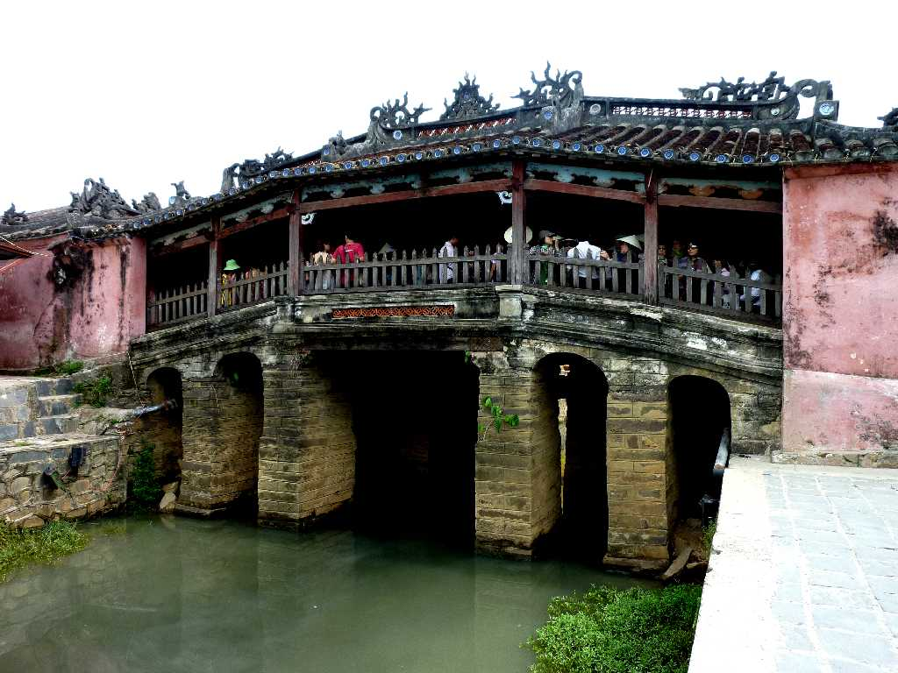
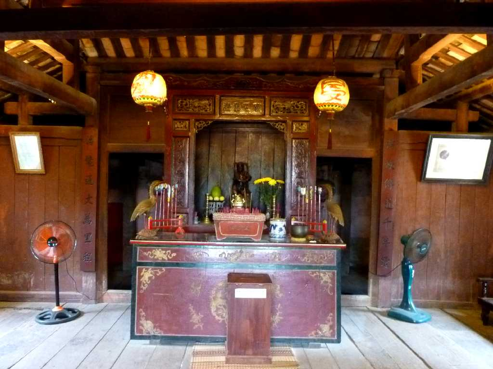
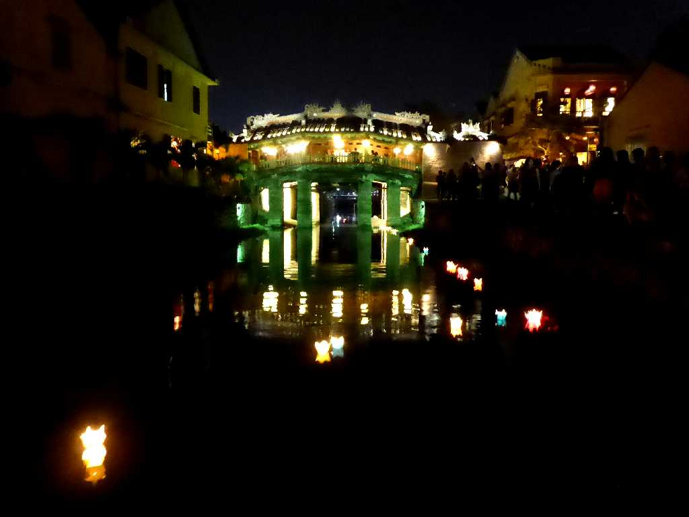
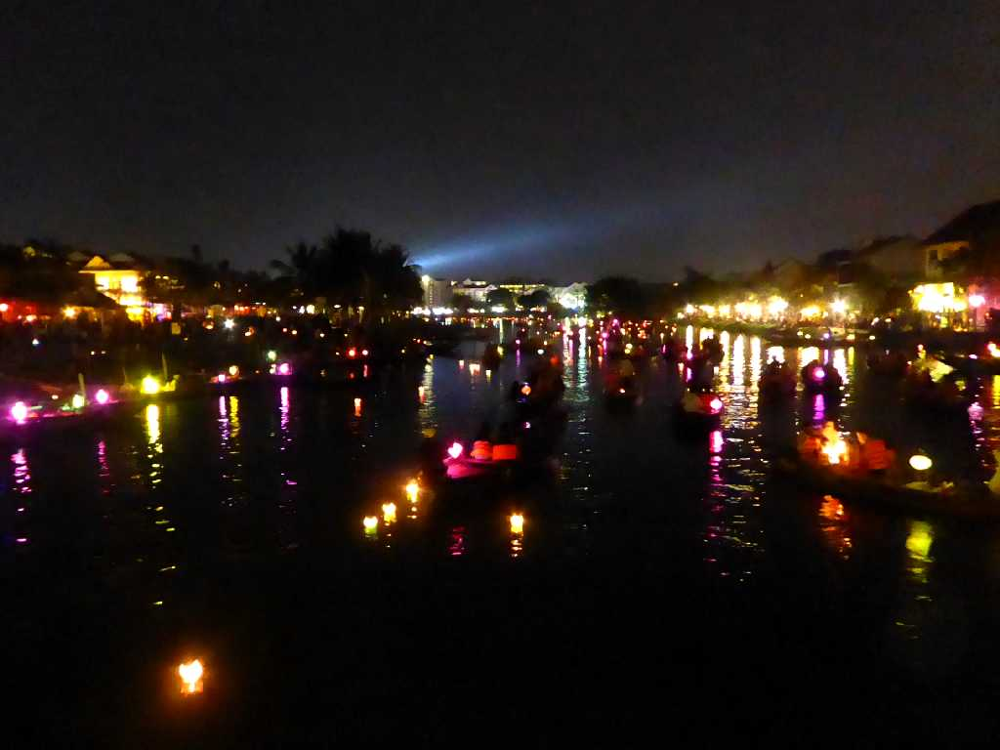
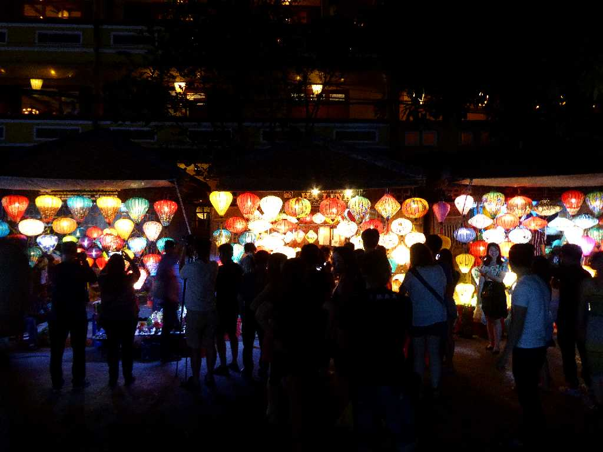
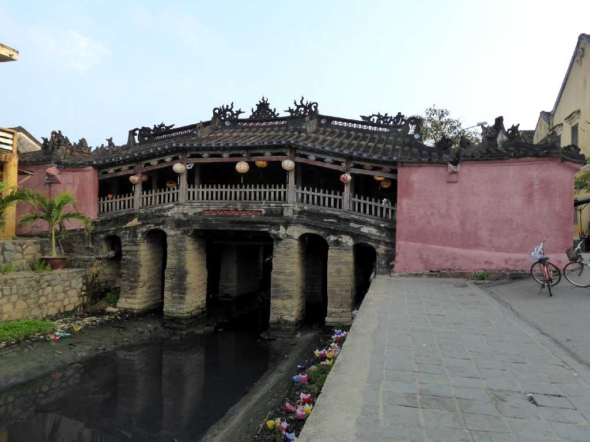
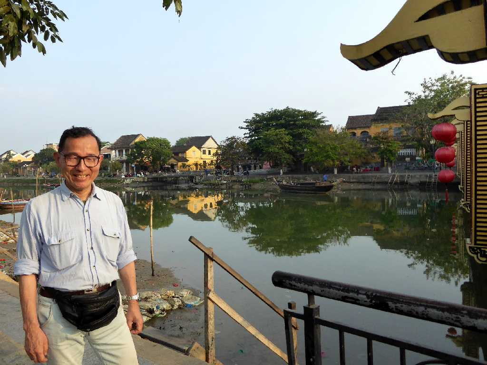

Japanese Bridge Hội An 来遠橋(日本橋)
チャンパ王国時代の古い港町で１６世紀以降国際貿易港として栄えた

Japanese Bridge Hội An
１７世紀初めの３０年間にわたり朱印船貿易が盛んに行われ日本人街や中国人街が形成され１６２３年にはオランダ東インド会社も加わり繁栄したが海を結ぶトゥボン川が土砂の堆積により浅くなると交易はダナンに移った
August 8 2010 Hội An
日本橋は１５９３年日本人により中国人街との架け橋として創られたが日本の鎖国により中国人が改修し中国風の来遠橋となっている

March 30 2018 Lantern Festival Japanese Bridge Hội An
８年ぶりの再訪問ではホイアンランタン祭を楽しむ

Lantern Festival Hội An
ホイアンランタン祭で灯篭を流し旅の無事を祈る

Lantern Festival Hội An

Japanese Bridge Hội An

March 31 2018 Hội An